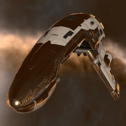

Punisher

Тип корабля: Фрегат
Государство/Организация: Amarr
Примерная стоимость: 536.000 ISK
Описание
Многие признают, что «Панишер» — один из лучших амаррских фрегатов. Его основное назначение — поддержка более крупных кораблей флота в ходе крупномасштабных военных операций, на что недвусмысленно намекает мощность несомого им вооружения; впрочем, «панишеры» вполне способны постоять за себя сами, дав сдачи практически любому противнику.
Характеристики
Корпус
Запас прочности корпуса: 450 ед.
Вместимость грузового отсека: 135 м^3
Объем отсека для дронов: -
Пропускная способность канала телеуправления: -
Масса: 1.190.000 кг
Занимает объем: 28.600,0 м^3 (2.500,0 м^3 в разобранном виде)
Влияние инертности конструкции: 2,9x
Сопротивление корпуса ЭМ-урону: 33 %
Сопротивление корпуса термальному урону: 33 %
Сопротивление корпуса кинетическому урону: 33 %
Сопротивление корпуса фугасному урону: 33 %
Броня
Запас прочности брони: 500 ед.
Сопротивление брони ЭМ-урону: 50 %
Сопротивление брони термальному урону: 35 %
Сопротивление брони кинетическому урону: 25 %
Сопротивление брони фугасному урону: 20 %
Щит
Запас прочности щита: 350 ед.
Влияние на время регенерации щитов: 10 минут и 25 секунд
Сопротивление щита ЭМ-урону: 0 %
Сопротивление щита термальному урону: 20 %
Сопротивление щита кинетическому урону: 40 %
Сопротивление щита фугасному урону: 50 %
Сопротивление средствам РЭП
Сопротивление накопителя нейтрализирующему воздействию: 0 %
Сопротивление воздействию генератору стазис-поля: 0 %
Сопротивление воздействию помех на наводку вооружения: 0 %
Накопитель энергии
Емкость накопителя: 400,0 ГДж
Время востановления заряда: 160 с
Целеуказания
Максимальная дальность захвата цели: 25 км
Максимальное количество захваченных целей: 4
Радиус сигнатуры: 37 м
Разрешающая способность систем захвата цели: 640 мм
Эффективность радарной системы: 10 ед.
Эффективность магнитнометрической системы: -
Эффективность гравиметрической системы: -
Эффективность ладарной системы: -
Двигательная установка
Максимальная скорость: 355 м/с
Скорость в варп-режиме: 5,0 а.е./с.
Служба оснащения
Мощность ЦПУ: 140,0 Тф
Мощность реактора: 67 МВт
Калибровка: 400 ед.
Точки монтажа орудийных установок: 4
Точки монтажа пусковых установок: -
Разъемы большой мощности: 4
Разъемы средней мощности: 2
Разъемы малой мощности: 5
Разъемы под установку тюнинг-модулей: 3